건축산업기사 (2012-03-04 기출문제)
1과목: 건축계획
1. 다음 중 주택의 부엌 계획에서 작업 삼각형(Work triangle)의 세변의 합으로 가장 적정한 것은?
- 2,000mm
- 3,200mm
- 5,000mm
- 7,000mm
(정답률: 84%)

2. 다음과 같은 조건에서 요구되는 침실의 최소 바닥면적은?
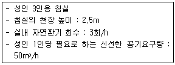
- 10m2
- 15m2
- 20m2
- 30m2
(정답률: 84%)
3. 학교 건축에서 단층교사에 관한 설명으로 옳지 않은 것은?
- 재해 시 피난이 용이하다.
- 학습활동의 실외 연장이 가능하다.
- 구조계획이 단순하며 내진, 내풍구조가 용이하다.
- 집약적인 평면계획이 가능하나 채광, 환기가 불리하다.
(정답률: 88%)
4. 학교 건축계획 시 고려하여야 할 사항으로 옳지 않은 것은?
- 교실의 융통성이 확보되어야 한다.
- 지역인의 접근 가능성이 차단되어야 한다.
- 교과내용의 변화에 적응할 수 있어야 한다.
- 학교운영방식의 변화에 대응할 수 있어야 한다.
(정답률: 89%)
5. 주택지의 단위 중 인보구의 중심시설에 해당하는 것은?
- 유치원
- 파출소
- 초등학교
- 어린이놀이터
(정답률: 89%)
6. 아파트의 단면 형식 중 스킵플로어형에 관한 설명으로 옳지 않은 것은?
- 엘리베이터의 효율적인 운행이 가능하다.
- 복도가 설치되지 않는 층에서 대피에 대한 고려가 요구된다.
- 엑세스(Access) 동선이 단순하여 설비나 구조계획이 용이하다.
- 각기 다른 세대의 평면계획으로 단면 및 입면상의 다양한 변화가 가능하다.
(정답률: 75%)
7. 다음 중 아파트의 성립 요인과 가장 거리가 먼 것은?
- 도시의 지가 상승
- 도시의 평면적 확대
- 도시의 인구밀도 증가
- 토지 소유에 대한 의식 증가
(정답률: 82%)
8. 사무소 건축에서 사무실의 깊이(L)와 층고(H)의 비율로 가장 적절한 것은?
- L/H = 1.2
- L/H = 2.0
- L/H = 2.8
- L/H = 3.5
(정답률: 75%)
9. 1주간 평균 수업시간이 40시간인 어느 학교의 음악교실이 사용되는 시간이 20시간이며 그 중 5시간은 영어수업을 위해 사용된다. 이 음악교실의 이용률과 순수율은?
- 이용률 : 50%, 순수율 : 50%
- 이용률 : 25%, 순수율 : 50%
- 이용률 : 50%, 순수율 : 75%
- 이용률 : 25%, 순수율 : 75%
(정답률: 87%)
10. 공장 건축계획에 대한 설명 중 옳지 않은 것은?
- 계획 시부터 증축에 대한 고려를 해야 한다.
- 평면은 가능한 요철이 없는 형이 바람직하다.
- 파빌리온형(Pavilion type)의 공장 형식은 통풍, 채광이 좋지 않다.
- 공장 건축의 레이아웃 중 고정식 레이아웃은 조선소와 같이 제품이 크고 수량이 적은 경우에 행해진다.
(정답률: 85%)
11. 다음 중 아파트의 주동계획에서 지상에 필로티를 두는 이유와 가장 관계가 먼 것은?
- 개방감의 확보
- 원활한 보행동선의 연결
- 오픈스페이스로써의 활용 가능
- 용적률의 감축 및 공사비 절감
(정답률: 73%)
12. 사무소 건축의 코어 계획에 관한 설명으로 옳지 않은 것은?
- 코어 내의 계단, 화장실, 엘리베이터는 가능한 근접하여 배치한다.
- 엘리베이터의 설치 대수가 6대 이상일 경우 직선형으로 배치한다.
- 코어 내의 서비스 공간과 업무 사무실과의 동선을 단순하게 처리한다.
- 코어의 위치와 코어 내의 각 공간의 위치가 시각적으로 명확하게 배치한다.
(정답률: 88%)
13. 전면유리로 되어있어 일반 상점가에 많이 사용되는 숍프론트(Shop front) 형식은?
- 개방형
- 폐쇄형
- 혼합형
- 분리형
(정답률: 88%)
14. 다음과 같은 특징을 갖는 사무소 건축의 코어 유형은?
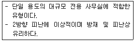
- 외코어형
- 중심코어형
- 편심코어형
- 양단코어형
(정답률: 88%)
15. 상점의 정면(Facade) 구성에 요구되는 5가지 광고요소에 해당하지 않는 것은?
- 행동(Action)
- 기억(Memory)
- 동의(Agreement)
- 주의(Attention)
(정답률: 86%)
16. 상점의 진열대 배치유형 중 직렬형에 관한 설명으로 옳지 않은 것은?
- 협소한 매장에 적합하다.
- 굴절형에 비하여 상품의 전달 및 고객의 동선상 흐름이 늦다.
- 진열대를 일직선 형태로 배열한 형식으로 통로가 직선으로 구성된다.
- 부분별로 상품 진열이 용이하고 대량 판매형식도 가능한 배치유형이다.
(정답률: 81%)
17. 백화점 건축에서 다음과 같은 특징을 갖는 에스컬레이터 배치 유형은?
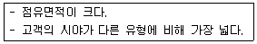
- 교차식 배치
- 직렬식 배치
- 병렬 단속식 배치
- 병렬 연속식 배치
(정답률: 80%)
18. 주택에서 주방의 일부에 간단한 식탁을 설치하거나 식사실과 주방이 하나로 구성된 형태는?
- 독립형(D형)
- 다이닝 키친(DK형)
- 리빙 다이닝(LD형)
- 다이닝 테라스(DT형)
(정답률: 88%)
19. 공장 건축의 지붕형식에 관한 설명으로 옳지 않은 것은?
- 솟을지붕은 채광 및 자연환기에 적합한 형식이다.
- 평지붕은 가장 단순한 형식으로 2~3층의 복층식 공장 건축물의 최상층에 적용된다.
- 샤렌구조 지붕은 최근에 많이 사용되는 유형으로 기둥이 많이 필요하다는 단점이 있다.
- 톱날지붕은 북향의 채광창을 통한 약한 광선의 유입으로 작업능률에 지장이 없는 형식이다.
(정답률: 81%)
20. 사무소 건축에서 유효율(Rentable ratio)이 의미하는 것은?
- 연면적과 대지면적의 비
- 임대면적과 연면적의 비
- 업무공간과 공용공간의 비
- 기준층의 바닥면적과 연면적의 비
(정답률: 82%)
2과목: 건축시공
21. 시멘트모르타르 바르기에 관한 기술 중 옳지 않은 것은?
- 실내의 미장바름 순서는 천장, 벽, 바닥 순으로 한다.
- 초벌바름에서 건조한 바탕에는 물축이기를 한다.
- 고름질 후 약 2주일 간 방치하여 균열이 충분히 진행된 후 재벌바름을 한다.
- 정벌바름에서는 나무흙손을 사용하여 바를 경우 바른면이 거칠고 흙손 자국이 나기 쉬우므로 쇠흙손을 사용한다.
(정답률: 53%)
22. 철근콘크리트기둥의 단면이 0.4×0.5m이고 길이가 10m일 때 이 기둥의 중량은?
- 3.6t
- 4.8t
- 6t
- 6.4t
(정답률: 74%)
23. 콘크리트를 부어 넣은 후 거푸집의 탈형을 용이하게 하기 위해 미리 거푸집면에 도포하는 약제를 무엇이라고 하는가?
- 혼화제
- 경화제
- 도포제
- 박리제
(정답률: 74%)
24. 벽돌벽면에 균열이 생기는 이유가 아닌 것은?
- 벽돌 벽의 부분적인 시공 결함
- 큰 집중하중과 횡력 및 충격
- 문꼴 크기의 불합리한 배치
- 신축줄눈이나 조절줄눈 설치
(정답률: 81%)
25. 고로 슬래그 미분말을 혼화재로 사용한 콘크리트의 특징에 대한 설명으로 옳지 않은 것은?
- 초기강도가 낮다.
- 블리딩이 적고 유동성이 향상된다.
- 알칼리골재반응이 촉진된다.
- 콘크리트의 온도상승 억제 효과가 있다.
(정답률: 49%)
26. 지붕재료로서 요구되는 성능으로 옳지 않은 것은?
- 방화적이고 열전도가 잘 될 것
- 수밀성이 높고 내수적일 것
- 가볍고 내구성이 클 것
- 시공이 용이하고 내후적일 것
(정답률: 83%)
27. 구조체의 수량 산출 시에 거푸집 면적에서 공제해야 되는 항목은?
- 기둥과 벽체의 접합부 면적
- 기초와 지중보의 접합부 면적
- 기둥과 보의 접합부 면적
- 1m2를 초과하는 개구부의 면적
(정답률: 64%)
28. 다음 중 커튼월의 패널부착방식에 따른 분류에 속하지 않는 것은?
- 멀리온방식
- 슬라이딩방식
- 로킹방식
- 고정방식
(정답률: 50%)
29. 공사 도급계약을 할 때 필히 첨부하지 않아도 되는 서류는?
- 구조계산서
- 시방서
- 도급계약서
- 설계도
(정답률: 65%)
30. 다음 미장공사 재료 중 기경성 재료는?
- 순석고플라스터
- 혼합석고플라스터
- 돌로마이트플라스터
- 시멘트모르타르
(정답률: 86%)
31. 다음 중 철골 접합의 용접 종료 후에 실시하는 비파괴검사가 아닌 것은?
- 외관검사
- 침투탐상검사
- 초음파탐상검사
- 운봉검사
(정답률: 65%)
32. 철근콘크리트의 골재로서 해사(海沙)를 사용할 경우 특히 취해야 할 조치는?
- 잔골재의 혼합비를 많게 한다.
- 충분히 물로 씻어 낸다.
- 조강 포틀랜드 시멘트를 사용한다.
- 충분히 건조시킨다.
(정답률: 65%)
33. 흙의 휴식각과 연관한 터파기 경사각도로서 옳은 것은?
- 휴식각의 1/2로 한다.
- 휴식각과 같게 한다.
- 휴식각의 2배로 한다.
- 휴식각의 3배로 한다.
(정답률: 73%)
34. 방부성이 우수하지만 악취가 나고, 흑갈색으로 외관이 불미하므로 눈에 보이지 않는 토대, 기둥, 도리 등에 사용되는 방부제는?
- P.C.P
- 크레오소트 유
- 콜타르
- 에나멜페인트
(정답률: 74%)
35. 다음 유리의 종류 중 방화 및 방재용으로 사용되는 유리는?
- 망입유리
- 보통판유리
- 강화유리
- 복층유리
(정답률: 74%)
36. 다음 중 콘크리트의 건조수축에 대한 설명으로 옳은 것은?
- 시멘트의 성분 중 C3A는 건조수축을 증가시킨다.
- 바다모래에 포함된 염분은 그 양이 많으면 건조수축을 감소시킨다.
- AE제나 감수제는 단위수량을 감소시켜 건조수축을 증가시킨다.
- 골재 중에 포함된 미립분이나 점토, 실트는 일반적으로 건조수축을 감소시킨다.
(정답률: 49%)
37. 시멘트액체방수공사와 관련된 설명 중 옳지 않은 것은?
- 지하방수나 소규모의 지붕방수 등에 사용되는 경우가 많다.
- 시멘트액체방수의 바탕은 깨끗하고 거칠게 하는 것이 모르타르와 의 부착을 좋게 한다.
- 비교적 저렴하고 시공이 용이한 방수공법이다.
- 얇은 막상의 방수층을 형성시키는 멤브레인 방수공법에 속한다.
(정답률: 60%)
38. 철근콘크리트공사에서 거푸집의 조립 순서로 옳은 것은?
- 기초 → 기둥 → 내벽 → 큰보 → 작은보 → 바닥 → 외벽
- 기초 → 기둥 → 큰보 → 작은보 → 내벽 → 바닥 → 외벽
- 기초 → 기둥 → 큰보 → 작은보 → 외벽 → 바닥 → 내벽
- 기초 → 기둥 → 내벽 → 바닥 → 큰보 → 작은보 → 외벽
(정답률: 67%)
39. 다음 중 콘크리트 타설과 가장 관계가 먼 것은?
- Concrete mixer
- Floor hopper
- Vibrator
- Bar bender
(정답률: 66%)
40. 다음 시멘트 중 혼합 시멘트에 해당하지 않는 것은?
- 고로 시멘트
- 포틀랜드 포졸란 시멘트
- 플라이 애시 시멘트
- 조강 포틀랜드 시멘트
(정답률: 60%)
3과목: 건축구조
41. 그림과 같은 구조물의 판별로 옳지 않은 것은?
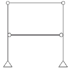
- 반력수는 4이다.
- 부재수는 6이다.
- 강절점수는 0이다.
- 절점수는 6이다.
(정답률: 67%)
42. 그림과 같은 보에서 전단력도를 보고 B지점에 발생하는 휨모멘트를 구하면 얼마인가?(단, 절대값으로 표현)
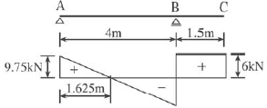
- 9kNㆍm
- 7.75kNㆍm
- 5.03kNㆍm
- 3.92kNㆍm
(정답률: 52%)
43. 다음 중 압축부재에서 세장비를 구할 때 필요 없는 것은?
- 부재 길이
- 단부 지점 조건
- 탄성계수
- 단면2차반경
(정답률: 48%)
44. 강도설계법에 의한 철근콘크리트 플랫슬래브 설계 시 지판의 슬래브 아래로 돌출한 두께는 돌출부를 제외한 슬래브 두께가 300mm일 때 최소 얼마 이상으로 하여야 하는가?
- 20mm
- 40mm
- 60mm
- 75mm
(정답률: 34%)
45. 그림과 같은 단면을 가지는 철근콘크리트보의 균형철근비(ρb)는 얼마인가?(단, 콘크리트의 압축강도는 30MPa, 철근의 항복강도는 450MPa, 철근의 탄성계수는 2.0×105MPa이며, 인장철근의 단면적은 2,000mm2이다.)
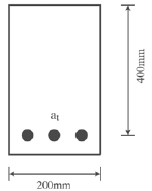
- 0.027
- 0.037
- 0.04
- 0.⑤7
(정답률: 55%)
46. 철근콘크리트보에서 중립축의 깊이(c)가 220mm이고, 최외단 압축연단에서 최외단 인장철근까지의 거리(dt)가 550mm라 한다. 이때의 강도감소계수를 구하면?(단, fy=400MPa)
- 0.625
- 0.764
- 0.817
- 0.925
(정답률: 39%)
47. 철근콘크리트구조의 1방향 슬래브의 정모멘트 철근 및 부모멘트 철근의 중심간격은 위험단면에서 슬래브 두께의 최대 몇 배 이하이어야 하는가?
- 1배
- 2배
- 3배
- 4배
(정답률: 63%)
48. 강도설계법에 의한 철근콘크리트보 설계에 대한 원칙으로 옳지 않은 것은?
- 인장철근이 설계기준항복강도 fy에 대응하는 변형률에 도달하고 동시에 압축콘크리트가 극한변형률인 0.003에 도달할 때, 그 단면이 균형변형률 상태에 있다고 본다.
- 압축콘크리트가 가정된 극한변형률인 0.003에 도달할 때 최외단인장철근의 순인장변형률 εt가 압축지배변형률한계 이하인 단면을 압축지배단면이라고 한다.
- 휨부재의 강도를 증가시키기 위하여 추가 인장철근과 이에 대응하는 압축철근을 사용할 수 있다.
- 압축콘크리트가 가정된 극한변형률인 0.003에 도달할 때 최외단 인장철근의 순인장변형률 εt가 0.0⑤ 이상인 단면을 변화구간단면이라고 한다.
(정답률: 43%)
49. 강도설계법일 경우 현장치기콘크리트에서 옥외의 공기나 흙에 직접 접하지 않는 콘크리트 설계기준 강도가 40N/mm2 이상인 기둥의 최소 피복두께로 적당한 것은?
- 50mm
- 40mm
- 30mm
- 20mm
(정답률: 38%)
50. 다음 그림의 구조물에서 A점에 생기는 휨모멘트의 크기는?
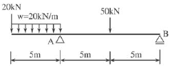
- -100kNㆍm
- -200kNㆍm
- -350kNㆍm
- -600kNㆍm
(정답률: 49%)
51. 단면이 100×100mm, 길이가 1m인 기둥에 100kN의 압축력을 가했더니 1mm가 줄어들었다.이 각재의 탄성계수는?
- 10MPa
- 100MPa
- 1,000MPa
- 10,000MPa
(정답률: 51%)
52. 기초설계 시 여러 종류의 말뚝을 혼용할 때 일반적으로 예상되는 문제점은?
- 압밀
- 전도
- 부동침하
- 수평이동
(정답률: 76%)
53. 축방향력을 받는 350×450mm인 기둥을 설계하고자 한다. 주근은 D16, 띠철근은 D10을 사용하고자 할 때 띠철근의 간격은?(단, D16의 공칭지름 15.9mm, D10의 공칭지름 9.5mm)
- 254mm
- 312mm
- 358mm
- 445mm
(정답률: 48%)
54. 축압축력 N=1,000kN, 휨모멘트 M=50kNㆍm가 500×500mm 기둥 단면에 작용할 때 단면의 최대 및 최소응력도로 옳은 것은?
- 4MPa, 2.4MPa
- 6.4MPa, 2.4MPa
- 4MPa, 1.6MPa
- 6.4MPa, 1.6MPa
(정답률: 33%)
55. 그림과 같은 보에서 최대전단응력도를 구하면?(단, 원형단면이며 단면의 지름은 d이다.)
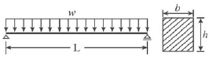
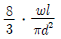
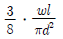
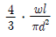
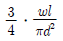
(정답률: 47%)
56. 다음 그림과 같은 단순보의 A-C, C-D, D-E, E-B구간에서 발생되는 전단력값(절대값)이 아닌 것은?
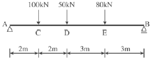
- 134kN
- 96kN
- 37kN
- 16kN
(정답률: 49%)
57. 다음 도형의 x축에 대한 단면1차모멘트는?
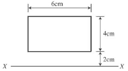
- 48cm3
- 72cm3
- 96cm3
- 144cm3
(정답률: 53%)
58. 철근콘크리트슬래브에 대한 설명 중 옳지 않은 것은?
- 1방향 슬래브의 두께는 최소 100mm 이상으로 하여야 한다.
- 1방향 슬래브에서는 정모멘트 철근 및 부모멘트 철근에 직각방향으로 수축, 온도철근을 배치하여야 한다.
- 슬래브 끝의 단순받침부에서도 내민 슬래브에 의하여 부모멘트가 일어나는 경우에는 이에 상응하는 철근을 배치하여야 한다.
- 주열대는 기둥 중심선을 기준으로 양쪽으로 장변 또는 단변길이의 1/4을 곱한 값 중 큰 값을 한 쪽의 폭으로 하는 슬래브의 영역을 가리킨다.
(정답률: 58%)
59. 강도설계법에 의한 철근콘크리트 구조물 설계에서 고정하중 ωD4kN/m2이고, 활하중 ωL=5kN/m2인 경우 소요강도 산정을 위한 계수하중 ωU는 얼마인가?
- 9kN/m2
- 10.6kN/m2
- 12.8kN/m2
- 15.3kN/m2
(정답률: 63%)
60. 다음 그림의 빗금친 마름모가 단면의 핵을 나타낸다고 할 때 FH/BC는?
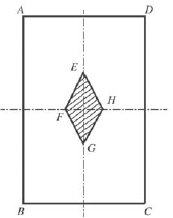
- 1/2
- 1/3
- 1/4
- 1/6
(정답률: 56%)
4과목: 건축설비
61. 백화점 화장실에서 일반적으로 사용되는 환기방식은?
- 자연급기-강제배기
- 자연급기-자연배기
- 강제급기-자연배기
- 강제급기-강제배기
(정답률: 66%)
62. 다음 설명에 알맞은 통기방식은?
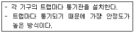
- 루프통기방식
- 각개통기방식
- 신정통기방식
- 회로통기방식
(정답률: 85%)
63. 다음 설명에 알맞은 밸브의 종류는?
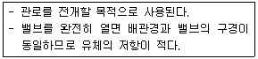
- 체크밸브
- 앵글밸브
- 글로브밸브
- 게이트밸브
(정답률: 62%)
64. 옥외소화전을 2개 설치한 건물에서 옥외소화전설비의 수원의 저수량은 최소 얼마 이상이 되도록 하여야 하는가?
- 14m3
- 7.0m3
- 5.2m3
- 2.6m3
(정답률: 49%)
65. 다음 설명에 알맞은 배선방법은?
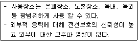
- 금속관배선
- 금속몰드배선
- 합성수지관배선
- 플로어덕트배선
(정답률: 69%)
66. 동일 특성을 갖는 펌프 2대를 직렬로 연결하여 운전할 경우에 관한 설명으로 옳은 것은?(단, 배관의 마찰저항이 없다고 가정한다.)
- 유량은 변하지 않고 양정은 2배로 높아진다.
- 양정은 변하지 않고 유량은 2배로 높아진다.
- 유량은 변하지 않고 양정은 4배로 높아진다.
- 양정은 변하지 않고 유량은 4배로 높아진다.
(정답률: 50%)
67. 다음의 전원설비와 관련된 설명 중 ( ) 안에 알맞은 용어는?
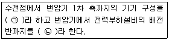
- ㉠ 배전설비, ㉡ 수전설비
- ㉠ 수전설비, ㉡ 배전설비
- ㉠ 간선설비, ㉡ 동력설비
- ㉠ 동력설비, ㉡ 간선설비
(정답률: 80%)
68. 가옥트랩으로서 공공하수관으로부터 해로운 하수가스가 집안으로 침입하는 것을 방지하기 위해 사용되는 것은?
- P트랩
- S트랩
- U트랩
- 드럼트랩
(정답률: 72%)
69. 증기난방에 관한 설명으로 옳은 것은?
- 온수난방에 비해 예열시간이 길다.
- 온수난방에 비해 한랭지에서 동결의 우려가 크다.
- 간헐난방을 필요로 하는 학교 등의 난방에 이용이 곤란하다.
- 온수난방에 비해 부하변동에 따른 실내방열량의 제어가 곤란하다.
(정답률: 60%)
70. 간접조명의 경우 등기구 사이의 간격으로 가장 적당한 것은? (단, H=작업면에서 등기구까지의 높이, S=등기구 사이의 간격)
- S≦H
- S≦1.5H
- S≦H/2
- S≦H/3
(정답률: 55%)
71. 다음과 같은 조건에 있는 아파트 외벽의 열손실량은?
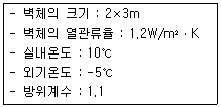
- 36W
- 79.2W
- 98.2W
- 118.8W
(정답률: 61%)
72. 어느 건물에서 옥내소화전의 설치개수가 가장 많은 층의 설치 개수가 7개인 경우, 옥내소화전설비의 수원의 저수량은 최소 얼마 이상이 되도록 하여야 하는가?(2021년 04월 01일 개정된 규정 적용됨)
- 2.6m3
- 5.2m3
- 10.4m3
- 20.8m3
(정답률: 67%)
73. 전압의 구분에서 특고압의 기준은?
- 3kV를 초과하는 것
- 5kV를 초과하는 것
- 7kV를 초과하는 것
- 10kV를 초과하는 것
(정답률: 65%)
74. 다음 중 보일러의 용량 결정과 가장 관계가 먼 것은?
- 예열부하
- 급탕부하
- 냉방부하
- 배관부하
(정답률: 62%)
75. 급탕설비에 관한 설명으로 옳은 것은?
- 중앙식 급탕법은 급탕개소가 적은 경우에 주로 채용된다.
- 국소식 급탕법은 배관에 의해 필요개소에 어디든지 급탕할 수 있다.
- 간접가열식에 사용되는 가열보일러는 난방용보일러와 겸용할 수 있다.
- 직접가열식은 열효율이 간접가열식에 비해 떨어지나 안정된 급탕을 할 수 있다.
(정답률: 60%)
76. 빙축열시스템에 관한 설명으로 옳지 않은 것은?
- 냉동기의 용량은 커지나 가동률은 높아진다.
- 얼음의 잠열을 이용하여 빙축열조가 필요하다.
- 값싼 심야전력을 이용하며 전력의 피크부하를 감소시킨다.
- 백화점 등 냉방부하가 크고 냉방기간이 긴 건물에 적합하다.
(정답률: 43%)
77. 초고층 건물에서 급수압력의 균등화를 위해 조닝(Zoning)을 하여야 하는데, 다음 중 고가수조를 설치하는 경우의 조닝방식에 속하지 않는 것은?
- 중간수조방식
- 감압밸브방식
- 펌프분리방식
- 중간수조, 감압밸브병용방식
(정답률: 63%)
78. 펌프의 전양정이 100m, 양수량이 12m3/h일 때, 펌프의 축동력은?(단, 펌프의 효율은 60%이다.)
- 약 3.5kW
- 약 4.0kW
- 약 4.5kW
- 약 5.5kW
(정답률: 58%)
79. 다음 중 위생성 측면에서 가장 바람직한 급수방식은?
- 고가탱크방식
- 수도직결방식
- 압력탱크방식
- 펌프직송방식
(정답률: 79%)
80. 어느 점광원과 1m 떨어진 곳의 직각면 조도가 100lx일 때, 이 광원과 2m 떨어진 곳의 직각면 조도는?(단, 단위는 lx)
- 25
- 50
- 75
- 100
(정답률: 59%)
5과목: 건축관계법규
81. 다음 중 연면적의 합계가 5,000m2인 건축물로서 공개공지 또는 공개공간을 확보하여야 하는 대상 건축물에 해당하지 않는 것은? (단, 상업지역이며, 건축조례로 정하는 건축물은 제외)
- 숙박시설
- 의료시설
- 업무시설
- 종교시설
(정답률: 62%)
82. 건축물의 건축허가신청 시 에너지절약계획서를 제출하여야하는 대상 건축물에 해당하지 않는 것은?
- 업무시설로서 그 용도에 사용되는 바닥면적의 합계가 1,000m2인 건축물
- 의료시설로서 그 용도에 사용되는 바닥면적의 합계가 2,000m2인 건축물
- 교육연구시설 중 연구소로서 당해 용도에 사용되는 바닥면적의 합계가 3,000m2인 건축물
- 제1종 근린생활시설 중 목욕장으로서 당해 용도에 사용되는 바닥면적의 합계가 300m2인 건축물
(정답률: 55%)
83. 공동주택의 난방설비를 개별난방방식으로 하는 경우에 대한 기준 내용으로 옳지 않은 것은?
- 보일러의 윗부분에는 그 면적이 0.5m2 이상인 환기창을 설치할 것
- 기름보일러를 설치하는 경우에는 기름저장소를 보일러실 외의 다른 곳에 설치할 것
- 보일러는 거실 외의 곳에 설치하되, 보일러를 설치하는 곳과 거실사이의 경계벽은 출입구를 제외하고는 내화구조의 벽으로 구획할 것
- 보일러실의 환기를 위하여 윗부분과 아랫부분에 지름 8cm 이상의 공기흡입구 및 배기구를 항상 열려있는 상태로 바깥공기에 접하도록 설치할 것
(정답률: 60%)
84. 건축법령상 건축(건축행위)에 속하지 않는 것은?
- 개축
- 재축
- 이전
- 대수선
(정답률: 78%)
85. 지표면으로부터 건축물의 지붕틀 또는 이와 비슷한 수평재를 지지하는 벽, 깔도리 또는 기둥의 상단까지의 높이로 산정하는 것은?
- 층고
- 처마높이
- 반자높이
- 바닥높이
(정답률: 68%)
86. 다음의 대지 안의 공지에 관한 기준 내용 중 ( ) 안에 알맞은 것은?
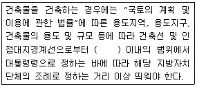
- 2m
- 4m
- 6m
- 8m
(정답률: 46%)
87. 하나의 대지가 녹지지역과 그 밖의 용도지역, 용도지구 또는 용도구역에 걸쳐 있는 경우 적용 기준으로 옳은 것은?(단, 녹지지역의 건축물이 고도지구 또는 방화지구에 걸쳐있지 않은 경우)
- 특별시, 광역시, 시 또는 군의 조례에 의한다.
- 녹지지역의 건축물 및 토지에 관한 규정을 적용한다.
- 각자의 용도지역, 용도지구 또는 용도구역의 건축물 및 토지에 관한 규정을 적용한다.
- 그 대지 중 가장 넓은 면적이 속하는 용도지역, 용도지구 또는 용도구역의 건축물 및 토지에 관한 규정을 적용한다.
(정답률: 57%)
88. 6층 이상의 거실면적의 합계가 8,000m2인 15층의 사무소 건축물에 설치해야 할 승용 승강기의 최소대수는?(단, 8인승 승강기인 경우)
- 2대
- 3대
- 4대
- 5대
(정답률: 66%)
89. 허가대상건축물이라 하더라도 신고를 하면 건축허가를 받은 것으로 볼 수 있는 경우에 관한 기준 내용으로 옳지 않는 것은?
- 바닥면적의 합계가 85m2 이내의 개축
- 바닥면적의 합계가 85m2 이내의 증축
- 연면적의 합계가 100m2 이하인 건축물의 건축
- 연면적이 200m2 미만이고 4층 미만인 건축물의 대수선
(정답률: 72%)
90. 건축물에 설치하여야 하는 배연설비에 관한 기준 내용으로 옳지 않은 것은?
- 배연구는 손으로 열고 닫을 수 있도록 한다.
- 배연구는 예비전원에 의하여 열 수 있도록 한다.
- 배연구는 연기감지기 또는 열감지기에 의하여 자동으로 열 수 있는 구조로 한다.
- 배연창의 유효면적은 0.7m2 이상으로서 그 면적의 합계가 당해 건축물이 바닥면적의 200분의 1 이상이 되도록 한다.
(정답률: 72%)
91. 노외주차장의 주차형식에 따른 차로의 최소너비기준이 옳지 않은 것은?(단, 출입구가 1개인 경우)
- 직각주차 : 6.0m
- 평행주차 : 5.0m
- 45도 대향주차 : 5.5m
- 60도 대향주차 : 5.5m
(정답률: 56%)
92. 다음은 노외주차장의 설치에 대한 계획기준 내용이다. ( )안에 알맞은 것은?
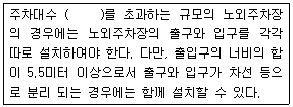
- 100대
- 200대
- 300대
- 400대
(정답률: 53%)
93. 문화 및 집회시설의 용도로 쓰는 건축물로서 관람석 또는 집회실의 바닥면적의 합계가 최소 얼마 이상인 경우 주요구조부를 내화구조로 하여야 하는가?
- 200m2
- 400m2
- 500m2
- 600m2
(정답률: 42%)
94. 다음 중 주차대수 1대에 대한 최소주차단위구획면적이 가장 넓은 것은?(단, 평행주차형식 외의 경우)
- 경형
- 일반형
- 확장형
- 장애인전용
(정답률: 83%)
95. 다음 중 건축법령상 공동주택에 속하지 않는 것은?
- 아파트
- 연립주택
- 다중주택
- 다세대주택
(정답률: 75%)
96. 연면적 200m2를 초과하는 건축물에 설치하는 계단에 관한 기준 내용으로 옳지 않은 것은?
- 높이 3m를 넘는 계단에는 높이 3m 이내마다 너비 1.2m 이상의 계단참을 설치하여야 한다.
- 판매시설의 용도에 쓰이는 건축물의 계단인 경우에는 계단 및 계단참의 양옆에는 난간(벽 또는 이에 대치되는 것을 포함)을 설치하여야 한다.
- 높이가 1m를 넘는 계단 및 계단참의 양옆에는 난간(벽 또는 이에 대치되는 것을 포함)을 설치하여야 한다.
- 계단의 유효높이(계단의 바닥 마감면부터 상부 구조체의 하부 마감면까지의 연직방향의 높이)는 1.8m 이상으로 하여야 한다.
(정답률: 67%)
97. 지하식 또는 건축물식 노외주차장의 차로에 관한 기준 내용으로 옳지 않은 것은?
- 경사로의 노면은 거친 면으로 하여야 한다.
- 높이는 주차바닥면으로부터 2.3m 이상으로 하여야 한다.
- 경사로의 종단경사도는 직선부분에서는 14%를 초과하여서는 아니 되며, 곡선부분에서는 17%를 초과하여서는 아니 된다.
- 곡선부분은 자동차가 6m(같은 경사로를 이용하는 주차장의 총주차대수가 50대 이하인 경우에는 5m) 이상의 내변반경으로 회전할수 있도록 하여야 한다.
(정답률: 69%)
98. 주거지역의 세분 중 공동주택 중심의 양호한 주거환경을 보호하기 위하여 필요한 지역은?
- 제1종전용주거지역
- 제2종전용주거지역
- 제1종일반주거지역
- 제2종일반주거지역
(정답률: 72%)
99. 다음 중 대지 및 건축물 관련 건축기준의 허용오차가 옳지 않은 것은?
- 건축물높이 : 3% 이내
- 바닥판두께 : 3% 이내
- 건축선의 후퇴거리 : 3% 이내
- 인접건축물과의 거리 : 3% 이내
(정답률: 63%)
100. 비상용 승강기 설치대상건축물에서 비상용 승강기의 승강장의 바닥면적은 비상용 승강기 1대에 대하여 최소 얼마 이상으로 하여야 하는가?(단, 옥내에 승강장을 설치하는 경우)
- 5m2
- 6m2
- 7m2
- 8m2
(정답률: 74%)
따라서, 작업 삼각형의 세변의 합이 가장 적정한 값은 주방 작업의 효율성을 고려하여 결정되어야 합니다. 일반적으로, 작업 삼각형의 세변의 합은 4,000mm에서 8,000mm 사이가 적정한 값으로 알려져 있습니다.
그러므로, 주어진 보기 중에서 작업 삼각형의 세변의 합으로 가장 적정한 값은 "5,000mm"입니다. 이 값은 적절한 작업 삼각형의 크기를 유지하면서도 주방 공간을 효율적으로 활용할 수 있는 적절한 범위 내에 있기 때문입니다.